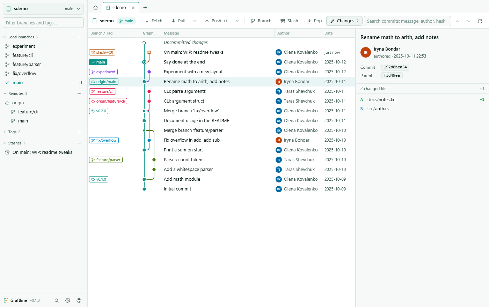
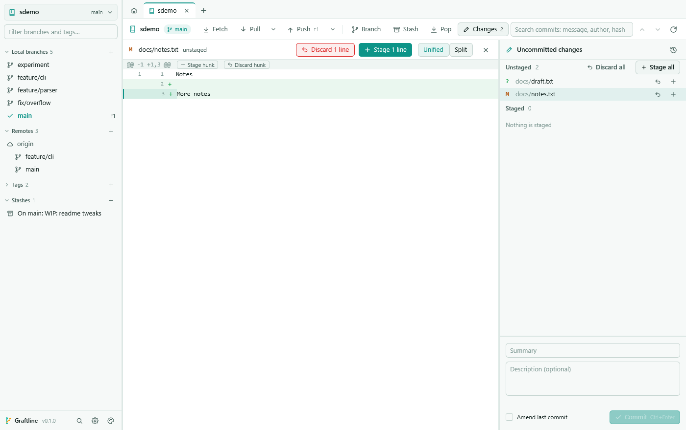

Graftline is a free desktop Git client built around the commit graph. It opens large repositories in under a second and asks before anything that can lose work.

Branches, tags, stashes and remotes in one graph. Search by message, author or hash. Scrolls smoothly at 86,000 commits.
Stage, unstage or discard a file, a hunk or single lines. Unified and side-by-side diffs with syntax highlighting.
Merge, rebase, cherry-pick, revert and reset. Interactive rebase reorders, squashes, rewords and drops commits in a dialog.
Take a side for a file, a block or a line, or edit the result by hand. The labels say what “ours” and “theirs” are.
Light and dark themes follow your system — and so does this page.

Click line numbers to choose the lines of a commit. Stage them, or discard them with an undo.
A Git client handles work that is not saved anywhere else. Graftline treats every destructive action as a decision that is yours.
--force-with-lease and tells how many remote commits it removesFree for Windows, macOS and Linux.
The installer shows where the program and your settings are stored, and adds “Open in Graftline” to folders.
Installer (.msi) Portable .exe — no installationUniversal app for Apple Silicon and Intel. Drag Graftline to Applications.
Disk image (.dmg) Not notarized yet: right-click → Open the first time.Debian / Ubuntu package with a desktop entry, or a portable archive. Needs a Vulkan driver.
Package (.deb) Portable .tar.gzFetch, pull, push, clone and history changes use the Git on your computer. Without it, Graftline still browses repositories.
Get Git →Needs stable Rust and a C compiler. No Node.js.
git clone https://github.com/byht1/graftline cd graftline && cargo build --release
Pass a folder on the command line, drop it on the window, or use the folder menu.
# any folder inside a repository
graftline ~/code/my-project
Checksums and all files: the latest release.